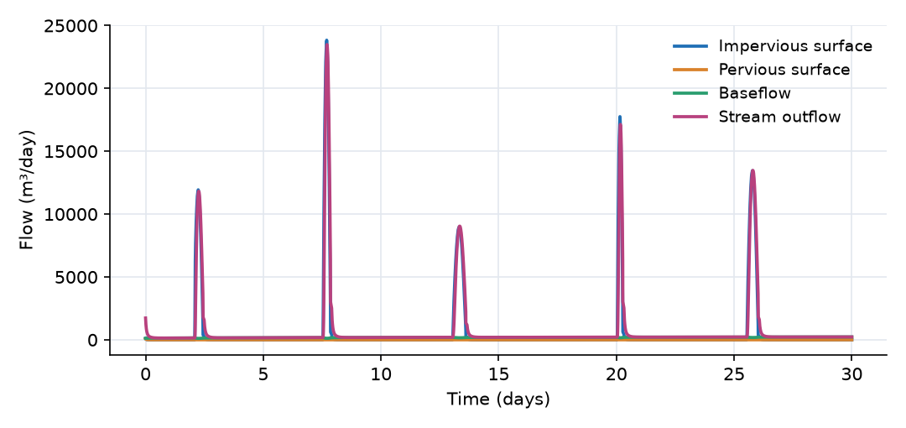
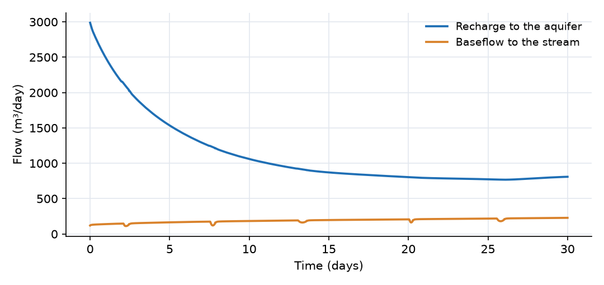
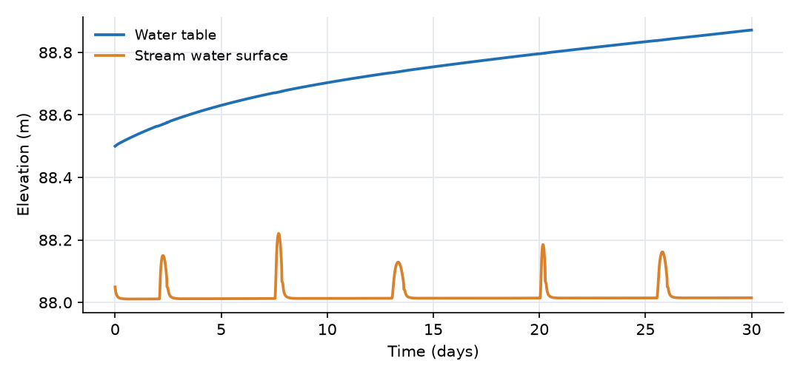
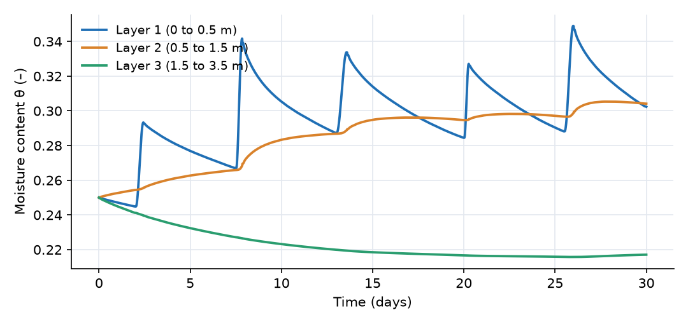

What this model represents
Urbanization changes how a watershed responds to rain. Roofs, roads and parking lots connected to storm drains send rain to the stream within minutes to hours, while lawns and parks still absorb most of what falls on them. The stream gets higher, faster storm peaks, and its dry-weather flow depends on how much water still reaches the aquifer through the remaining pervious ground.
This model represents a 50 ha neighborhood as a single Urban HRU that drains to a short stream reach. A quarter of the area is directly connected impervious surface. It shows the split between fast impervious runoff and slow groundwater return flow, and closes the water balance over one wet month. It is the worked example of the technical guide.
How it works
The Urban_HRU composite contains eight members. In the output their names carry the HRU name as a prefix, for example Neighborhood__Soil_1_theta.
| Member | Type | Plan area | Role |
|---|---|---|---|
Impervious_Catchment |
Catchment | A·f_i = 12.5 ha | Impervious surface, no soil below |
Catchment |
Catchment | A·(1 − f_i) = 37.5 ha | Pervious surface |
Impervious_Reach, Reach |
Trapezoidal channel, 400 m | Collect the runoff of each surface | |
Soil_1, Soil_2, Soil_3 |
Soil, 0.5 m, 1.0 m, 2.0 m | 37.5 ha | Unsaturated profile under the pervious surface |
Groundwater |
Unconfined groundwater cell | A = 50 ha | Aquifer under the whole unit |
The impervious fraction is f_i = min(impervious_fraction × impervious_multiplier, 0.95) = 0.25. It must be the directly connected impervious area: impervious surfaces that drain onto lawns belong to the pervious surface.
Surfaces and reaches. Rain falls on both surfaces. Each surface drains to its own reach by sheet flow,
Q = 86400 · (W/n) · S^0.5 · max(d − d_s, 0)^(5/3) (m³/day)
with a shared width W = 2500 m and slope S = 0.03, and separate roughness and depression storage (n = 0.015 and d_s = 1.5 mm for the impervious surface; n = 0.15 and d_s = 5 mm for the pervious surface). The reaches and the stream use Manning's equation driven by the head difference between neighboring segments,
Q = 86400 · (1/n̄) · A_u · R^(2/3) · ((h_r − h_c)/L̄)^0.5
where A_u is the flow area at the end with the higher head, R the hydraulic radius, n̄ and L̄ the mean roughness and length of the two segments.
Soil. The three layers take their own van Genuchten parameters (K_sat = 0.6, 0.4 and 0.8 m/day; α = 1.5, 1.2 and 2.0 1/m; n = 1.35, 1.35 and 1.45). Infiltration into Soil_1 is Darcy flow across half the top layer, driven by the difference between the ponded head and the soil head, so while the soil is unsaturated the infiltration capacity is several times K_sat. Percolation between layers uses the Mualem relative conductivity k_r of the wetter layer. Evapotranspiration is E = 0.8 · ET₀ · A_1 · θ_1/θ_sat,1.
Recharge. The water table lies 8 m below the soil column. With a constant conductivity, recharge across such a gap would hardly depend on soil moisture. The Urban HRU therefore uses the unsaturated conductivity of the bottom layer:
Q_r = A(1 − f_i) · K_sat,3 · [k_r(S_e,3)·(h_3 − h_g)⁺ − (h_g − h_3)⁺] / L, L = (d_3 + b)/2
where b = 12 m is the groundwater thickness parameter and (x)⁺ = max(x, 0). Recharge therefore falls as the bottom layer drains.
Aquifer. The unconfined cell has head h_g = z_base + V_g/(S_y·A), with specific yield S_y = 0.15 and the base at 84.5 m. Each millimetre of recharge over the pervious area raises the water table by (1 − f_i)/S_y = 5 mm. The initial storage is computed from the initial water-table elevation of 88.5 m.
Baseflow. Baseflow is Q_b = K·A_b·(h_g − h_c)/L_b with K = 5 m/day, A_b = 8000 m², L_b = 150 m and h_c the stream water surface. It runs in either direction.
What to look for in the results
- Fast impervious runoff. Of the 18,584 m³ of rain on the impervious surface, 18,370 m³ (98.8%) reaches the stream, most of it within hours of each storm. The rest is held in depression storage. The stream outflow peaks at 23,500 m³/day (0.27 m³/s) in the storm on day 7.5.
- No pervious runoff. The rain intensity (at most 8 mm/h) never exceeds the infiltration capacity of the lawns, so the pervious surface produces only the few cubic metres that drain from its reach at the start.
- Recharge. Recharge starts at about 3000 m³/day (8 mm/day over the pervious area) as the initially wet bottom layer drains, then falls with its unsaturated conductivity to about 800 m³/day. In total 33,500 m³ (89 mm over the pervious area) reaches the aquifer.
- Baseflow. The water table rises 0.37 m. Baseflow grows from 120 to 228 m³/day, and between storms it is the whole flow of the stream.
- Water balance (30 days, 50 ha):
| Term | m³ | mm over 50 ha |
|---|---|---|
| Rain | 74,336 | 148.7 |
| Evapotranspiration | −16,743 | −33.5 |
| Outflow at the outlet | −24,206 | −48.4 |
| Increase in soil water | 5,435 | 10.9 |
| Increase in groundwater | 27,854 | 55.7 |
| Increase in surface, reach and stream storage | 92 | 0.2 |
The residual is 6 m³ (0.01% of the rain).
Assumptions and limitations
- One unit represents the whole neighborhood: one water table, one moisture content per soil layer and one ponded depth per surface.
- Only the connected impervious area is impervious. Disconnected roofs and driveways are lumped with the lawns, where rain on them can infiltrate.
- There is no evaporation from the surfaces, so water left in depression storage stays there. Evapotranspiration comes from the top soil layer only.
- The aquifer is a single cell. The stream is short and ends at a fixed head, so there is no upstream inflow and no backwater from downstream.
- The soil and aquifer parameters are illustrative, not calibrated to a site.
Model diagram
Hover a block or link to see its name and type. Arrows show the positive flow direction.
Components
Click a component to see every property set in the model file, with units and meaning.
Blocks 2
Storage compartments: each holds water (and dissolved or particulate mass) and has a state that evolves in time.
StreamTrapezoidal Channel Segment · open_channelReceiving stream: an 800 m trapezoidal channel, 3 m base width, 2:1 side slopes, Manning n = 0.035, bed at 88 m, initial depth 0.05 m.
Trapezoidal Channel Segment: Trapezoidal Channel Segment
| Property | Value | Unit | Meaning |
|---|---|---|---|
| Base Width | 3 | m | The width of the bottom (flat) portion of the trapezoidal channel cross-section. |
| Side Slope | 2 | The horizontal to vertical ratio of the sloped sides (e.g., 2 means 2 horizontal to 1 vertical). | |
| Manning's Roughness Coefficient | 0.035 | Roughness coefficient used in Manning's equation to estimate flow resistance. | |
| Bottom Elevation | 88 | m | Elevation of the channel bottom relative to the model’s vertical datum. |
| Segment length | 800 | m | |
| Initial Water Depth | 0.05 | m | Depth of water in the channel segment. If depth is initially unknown, it is estimated based on storage. |
Outletfixed_headFixed-head boundary at 87 m at the downstream end of the stream. Its storage starts at zero and accumulates the outflow.
fixed_head: Fixed-head boundary
| Property | Value | Unit | Meaning |
|---|---|---|---|
| Head | 87 | m | |
| Initial Storage | 0 | m3 |
Composite blocks 1
Pre-assembled groups of blocks and links that behave as a single unit.
NeighborhoodUrban_HRU · urban_hruThe urban HRU: 50 ha with surface at 100 m. 25% (12.5 ha) is directly connected impervious surface; the other 37.5 ha is pervious, over 3.5 m of layered soil. Below lies an unconfined aquifer (specific yield 0.15) under the whole 50 ha, with the water table at 88.5 m. Each surface drains through its own 400 m internal reach.
Urban_HRU: Total HRU area is partitioned by min(impervious_fraction*impervious_multiplier, 0.95). The pervious Catchment and Soil_1..Soil_3 receive area*(1-impervious_fraction); the Impervious_Catchment receives area*impervious_fraction and has no infiltration. The Groundwater cell underlies the WHOLE unit (area), since the aquifer continues beneath impervious surfaces; it is recharged only through the pervious soil column (recharge interface area*(1-impervious_fraction)) by a soil_to_unconfined_groundwater_link: unsaturated conductivity of Soil_3 (K_sat*k_r(Se)) for drainage, saturated conductivity for upward flow. Soil layers are 1:2:4 fractions of depth_to_groundwater, each with its own van Genuchten parameters. The groundwater cell is an Unconfined Groundwater cell (unconfined_groundwater.json): its piezometric head rises by 1/specific_yield per unit of stored water depth, and its initial state is a water-table elevation. Neighbouring units exchange groundwater through UC_groundwater_link. Each surface drains through its own Trapezoidal Channel Segment. impervious_multiplier and K_sat_scale (default 1) are watershed-wide calibration multipliers.
| Property | Value | Unit | Meaning |
|---|---|---|---|
| Total plan area of the Urban HRU | 500000 | m2 | Total HRU plan area. Pervious catchment, soil layers and the recharge interface receive area*(1-impervious_fraction); the impervious catchment area*impervious_fraction; the groundwater cell the whole area. |
| Impervious fraction of the HRU plan area | 0.25 | Directly connected impervious fraction (DCIA) of the total area, before impervious_multiplier: the share of the land whose runoff reaches a storm drain or the stream without crossing pervious ground (not the total impervious area). The Impervious_Catchment receives area*min(impervious_fraction*impervious_multiplier, 0.95); the pervious Catchment, the soil layers and the recharge interface receive the rest; the Groundwater cell receives the whole area. | |
| Multiplier on the impervious fraction (calibration) | 1 | The impervious area is area*min(impervious_fraction*impervious_multiplier, 0.95). Keep 1 unless calibrating the directly connected impervious fraction. | |
| Ground surface elevation | 100 | m | Ground-surface datum for the HRU. It sets the Catchment elevation, soil-layer elevations, Groundwater bottom elevation, and bottom elevations of the two local routing reaches. For GIS-generated watershed models, GIStoOHQ should assign reach/channel elevations consistently with DEM-derived downstream elevations so Trapezoidal_Channel_link has a physically meaningful hydraulic-head gradient. |
| Depth from the ground surface to the water table | 3.5 | m | Total thickness of the unsaturated profile. It is split between the three layers in a 1:2:4 ratio, so they are one seventh, two sevenths and four sevenths of this value. |
| Thickness of the groundwater cell | 12 | m | Thickness of the groundwater cell from its base to the bottom of the soil column. Its base elevation is the surface elevation less the depth to groundwater less this thickness; it also sets the recharge flow path. |
| Precipitation source | Rain | Applied to both catchment surfaces. | |
| Evapotranspiration source for the top soil layer (Soil_1) | ET | Applied to Soil_1. A second, optional source (Evapotranspiration_2) can be attached to Soil_2 and Soil_3 for root-zone uptake below the top layer, and a third (Evapotranspiration_GW) to the groundwater cell. | |
| Shared slope of the infiltrating and impervious catchment surfaces | 0.03 | Average surface slope applied to both Catchment and Impervious_Catchment. GIStoOHQ may later provide separate surface-specific slopes if available. | |
| Shared overland-flow width of the infiltrating and impervious catchment surfaces | 2500 | m | Overland-flow width applied to both Catchment and Impervious_Catchment. GIStoOHQ may later provide separate widths if derived from GIS geometry. |
| Manning roughness coefficient of the infiltrating catchment surface | 0.15 | ||
| Depression storage depth of the infiltrating catchment surface | 0.005 | m | |
| Surface rainfall-to-runoff multiplier | 1 | Fixed at 1 for both catchments. GIS imperviousness is represented by area partitioning rather than by runoff coefficient. On Catchment, infiltration is represented explicitly through the surfacewater_to_soil_link and subsequent soil/groundwater processes. On Impervious_Catchment, there is no infiltration link. | |
| Manning roughness coefficient of the impervious catchment surface | 0.015 | ||
| Depression storage depth of the impervious catchment surface | 0.0015 | m | |
| Saturated hydraulic conductivity of soil layer 1 | 0.6 | m/day | |
| Saturated hydraulic conductivity of soil layer 2 | 0.4 | m/day | |
| Saturated hydraulic conductivity of soil layer 3 | 0.8 | m/day | |
| van Genuchten α of soil layer 1 | 1.5 | 1/m | |
| van Genuchten α of soil layer 2 | 1.2 | 1/m | |
| van Genuchten α of soil layer 3 | 2.0 | 1/m | |
| van Genuchten n of soil layer 1 | 1.35 | ||
| van Genuchten n of soil layer 2 | 1.35 | ||
| van Genuchten n of soil layer 3 | 1.45 | ||
| Saturated moisture content of soil layer 1 | 0.42 | ||
| Saturated moisture content of soil layer 2 | 0.40 | ||
| Saturated moisture content of soil layer 3 | 0.36 | ||
| Residual moisture content of soil layer 1 | 0.06 | ||
| Residual moisture content of soil layer 2 | 0.06 | ||
| Residual moisture content of soil layer 3 | 0.04 | ||
| Specific storage of the soil profile | 0.01 | 1/m | |
| Initial moisture content of the soil layers | 0.25 | Initial condition for all three layers. Each layer's initial storage follows from its own area, thickness and this value. | |
| Multiplier on the saturated conductivity of all soil layers (calibration) | 1 | Scales K_sat_1..K_sat_3 (and therefore also the recharge conductivity, which is Soil_3's). The top layer is additionally scaled by K_sat_scale_surface. Keep 1 unless calibrating. | |
| Hydraulic conductivity of the groundwater cell | 1 | m/day | Hydraulic conductivity of the groundwater cell. Together with unconfined_groundwater_to_stream connector properties and the head difference between Groundwater and the receiving stream/reach, this controls groundwater discharge/baseflow. |
| Drainable porosity (specific yield) of the groundwater cell | 0.15 | ||
| Initial water-table elevation (same datum as surface_elevation) | 88.5 | m | Initial water-table elevation of the unconfined groundwater cell (same datum as surface_elevation). The cell's initial storage is groundwater_porosity*(initial_water_table_elevation-z_bottom)*area with z_bottom = surface_elevation-depth_to_groundwater-groundwater_thickness, so the initial water table does not move when groundwater_porosity changes (for example during calibration). |
| Base width of the internal routing reach connected to Catchment | 1 | m | |
| Side slope of the internal routing reach connected to Catchment | 2 | ||
| Manning roughness coefficient of the internal routing reach connected to Catchment | 0.05 | ||
| Length of the internal routing reach connected to Catchment | 400 | m | |
| Initial water depth in the internal routing reach connected to Catchment | 0.01 | m | |
| Base width of the internal impervious routing reach | 1 | m | |
| Side slope of the internal impervious routing reach | 2 | ||
| Manning roughness coefficient of the internal impervious routing reach | 0.02 | ||
| Length of the internal impervious routing reach | 400 | m | |
| Initial water depth in the internal impervious routing reach | 0.01 | m |
Links 4
Connections that move water (and the mass it carries) between blocks.
Pervious_outletReach_link · urban_hruPort of the HRU's pervious-surface reach (Reach_link) into the stream. Manning flow driven by the head difference between the reach and the stream.
Reach_link) into the stream. Manning flow driven by the head difference between the reach and the stream.Reach_link: Outlet of the Urban_HRU's Reach member (pervious-surface routing) to the receiving channel segment. Same Manning's-equation formulation as Trapezoidal_Channel_link; a distinct type name lets the Reach and the Impervious_Reach be connected as separate exits of the same composite (see Impervious_Reach_link).
Impervious_outletImpervious_Reach_link · urban_hruPort of the HRU's impervious-surface reach (Impervious_Reach_link) into the stream. Same equation.
Impervious_Reach_link) into the stream. Same equation.Impervious_Reach_link: Outlet of the Urban_HRU's Impervious_Reach member (impervious-surface routing) to the receiving channel segment. Same Manning's-equation formulation as Trapezoidal_Channel_link; a distinct type name lets the Impervious_Reach and the Reach be connected as separate exits of the same composite (see Reach_link).
Baseflowunconfined_groundwater_to_stream · unconfined_groundwaterDarcy exchange between the aquifer and the stream, through an 8000 m² seepage face over 150 m with K = 5 m/day. Positive toward the stream; it reverses if the stream stage rises above the water table.
unconfined_groundwater_to_stream: Darcy exchange between an Unconfined Groundwater cell and a channel segment (baseflow when the water table is above the stream, stream loss when below): flow = area*hydraulic_conductivity*(piezometric_head.s-head.e)/length, with area the bank (seepage-face) area and length the flow path from the aquifer to the stream.
| Property | Value | Unit | Meaning |
|---|---|---|---|
| Interface Area | 8000 | m2 | |
| Length | 150 | m | |
| Hydraulic Conductivity | 5 | m/day |
Stream_outletchannel2fixed · open_channelManning flow from the stream to the outlet boundary (channel2fixed).
channel2fixed).channel2fixed: Link from a channel segment to fixed head boundary
Sources 2
External inputs or sinks applied to blocks: rainfall, evaporation, loads, exchange with the atmosphere.
RainPrecipitationHourly rainfall for 30 days: five storms of 22 to 40 mm, 149 mm in total. Falls on both the pervious and impervious surfaces.
Precipitation: Precipitation
| Property | Value | Unit | Meaning |
|---|---|---|---|
| Precipitation Cumulative | precipitation.csv | m |
ETEvapotranspiration_Time_Series (Soil) · soil_evapotranspiration_modelsReference evapotranspiration (about 2.6 mm/day) with a correction factor of 0.8, withdrawn from the top soil layer under the pervious surface and scaled by its relative wetness.
Evapotranspiration_Time_Series (Soil): Evapotranspiration time-series for soil
| Property | Value | Unit | Meaning |
|---|---|---|---|
| Scale factor | 0.8 | ||
| Evaporation time series | evapotranspiration.csv | m/day |
Input files
precipitation.csv | Hourly rainfall depth. Three columns, no header: interval start (days), interval end (days), depth in the interval (m). 720 intervals over 30 days, 149 mm in total. |
evapotranspiration.csv | Daily reference evapotranspiration (m/day) versus time (days). Two columns, no header. 2.36 to 2.87 mm/day. |
Simulation settings
| Start time | 0 |
| End time | 30 |
| Initial time step | 0.001 |
| Write interval (steps) | 10 |
Results
Produced by running the downloaded model unchanged.



